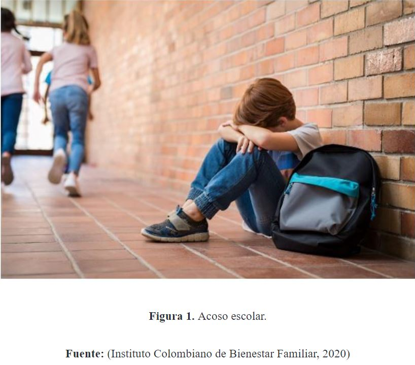
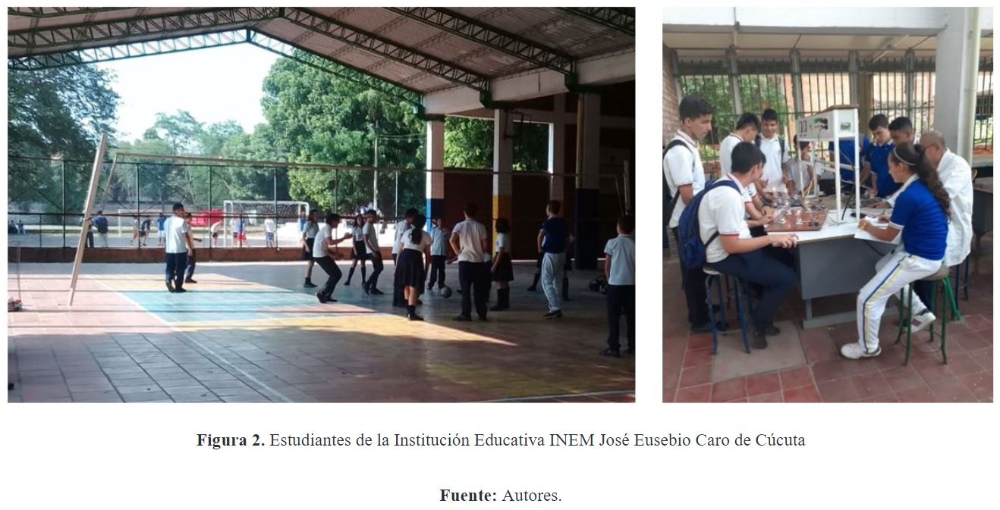
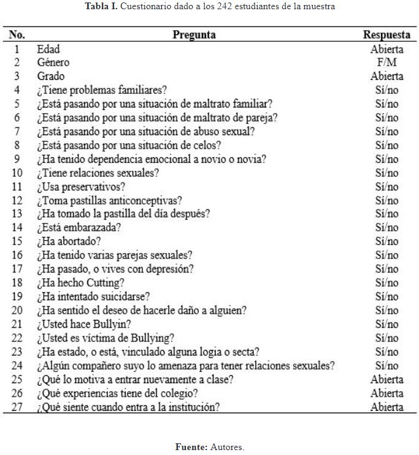
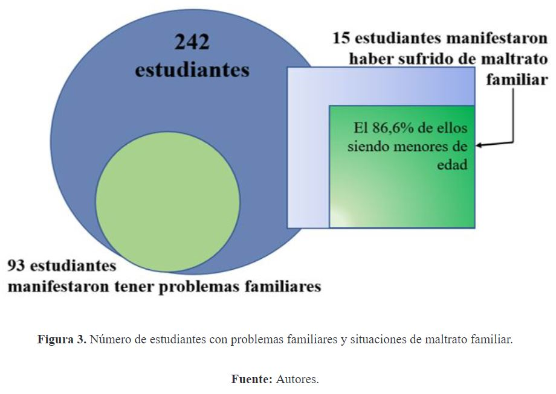
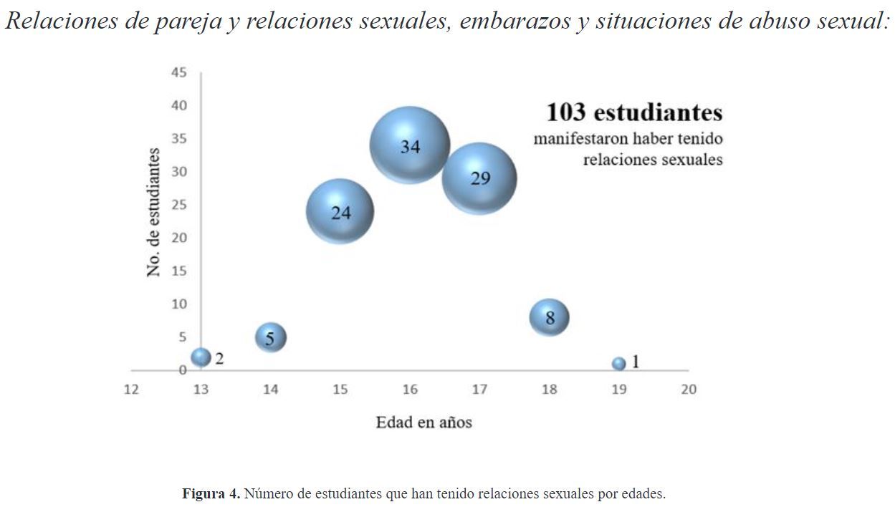
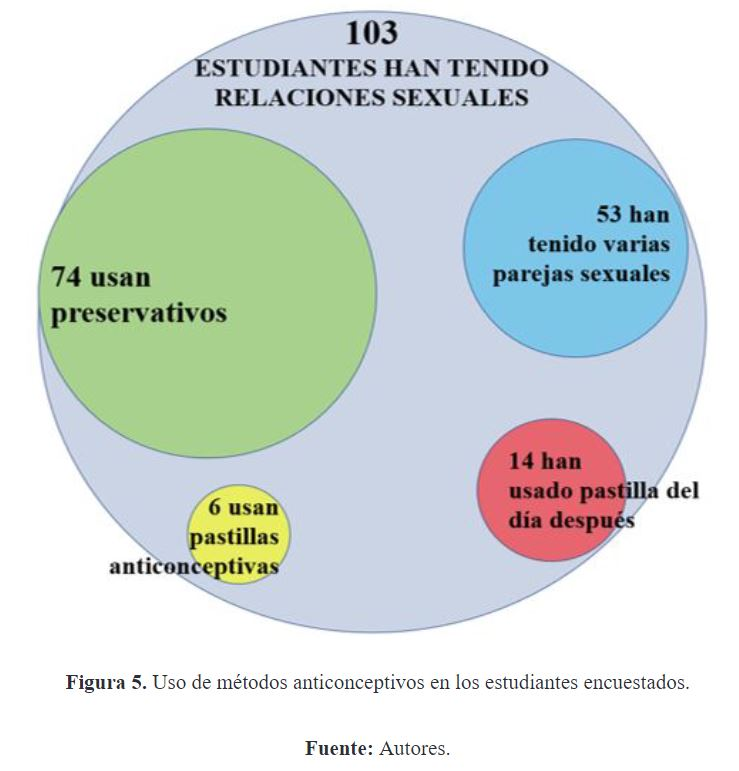
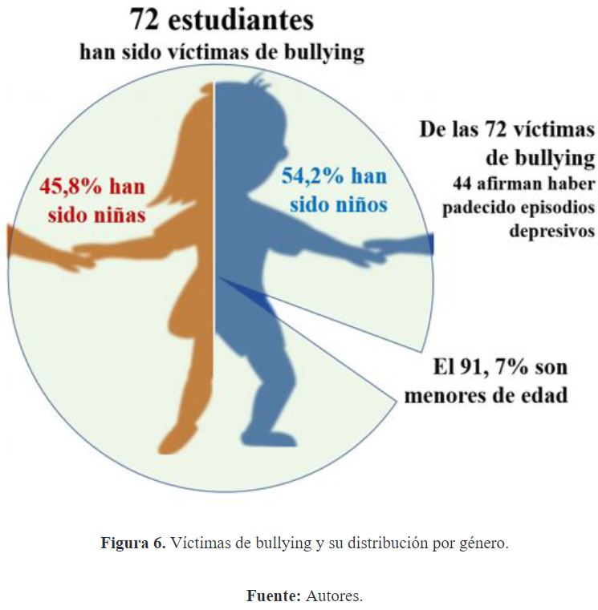
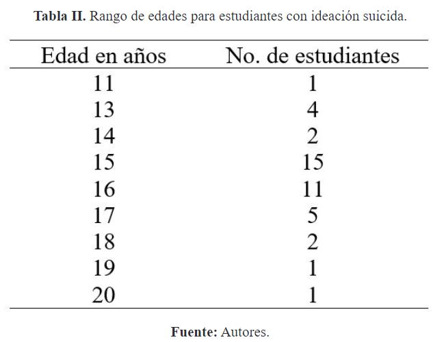
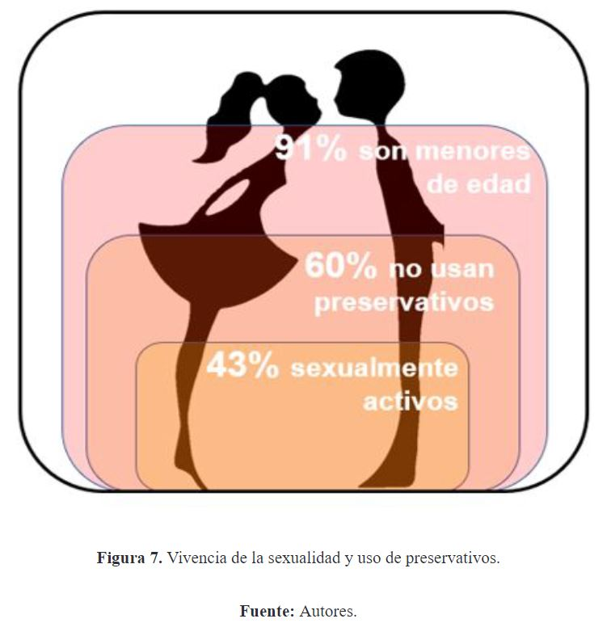

Introducción
Según la Organización Mundial de la Salud, la adolescencia se da entre los 10 y 19 años y es una etapa de
profundos cambios físicos, emocionales y sociales de cada individuo. Si estos cambios se dan en contextos de
pobreza, abuso o violencia, cada persona se expone a factores de riesgo que afectan su bienestar y buen
estado de salud mental. Por esto, es muy importante prevenir las circunstancias que puedan alterar el buen
desarrollo psicológico de niños, jóvenes y adolescentes; siendo la familia, la escuela y su comunidad,
escenarios para promover acciones que mitiguen los factores de riesgo para la salud mental (Organización
Mundial de la Salud, 2020).
El entorno escolar incide de forma crucial en la adolescencia teniendo en cuenta que las instituciones de
educación son los escenarios donde normalmente los adolescentes pasan gran parte de su día, no obstante,
esta tendencia se vio alterada por las circunstancias actuales de pandemia (Langer, Schmidt, Aguilar-Parra,
Cid, & Magni, 2017). Sin embargo, las escuelas y colegios siguen siendo espacios apropiados para abordar el
estudio, diagnóstico y tratamiento de los factores que afectan el desarrollo y bienestar psicológico de los
niños y jóvenes. Esto justifica el abordaje de factores como la vivencia de la sexualidad y la práctica del
acoso escolar, factores cruciales en el crecimiento, autoaceptación y estructuración en la identidad de un
adolescente. Para (Civila-Orellana, 2020) la escuela es un espacio de vida y una importante institución
integradora que contribuye con la constitución de identidad en los adolescentes.
La educación sexual surge finalizando la década de los ochenta con una estrecha relación con los problemas de
salud en los que se incluyen los comportamientos sexuales. Una década más adelante estaba orientada hacia la
calidad de vida y la formación integral. Más recientemente, se concibe desde su educabilidad lo cual le da
permanencia dentro de los planes de estudios escolares desde
los discursos relacionados con la salud. Se debe reconocer entonces el importante papel que tiene la escuela
en la formación de valores relacionados con la sexualidad, sobre todo su filosofía se orienta a la
construcción de valores, desarrollo, salud, bienestar, el derecho, la seguridad y la vida (Roa- García,
2017), lo cual invita incluso a la constante actualización, retroalimentación y capacitación de los docentes
orientadores pues (Pinos-Abad, y otros, 2017) afirman que la capacitación docente constituye una herramienta
de mejoramiento en el tema de la educación sexual. (Castro-Sandoval, y otros, 2019) aseguran que la
educación sexual contribuye con la salud de los adolescentes. La educación sexual escolar mejora la salud de
adolescentes, al fortalecer el comportamiento preventivo, reduciendo el número de embarazos no planificados
y contrarrestando las tasas de infecciones de transmisión sexual. Como resultado de una investigación en
México, (Rojas, y otros, 2017) concluyeron que es de suma importancia ir más allá en la consolidación de
planes de estudio cada vez más integrales, apostándole a que los niños, adolescentes y jóvenes no solo
reciban información sobre las implicaciones de la vivencia de su sexualidad, sino que puedan tener
herramientas para analizar y criticar (con argumentos) las concepciones sociales sobre género y sexualidad.
Además, consideran importante propender por el ajuste de los programas académicos según la edad de los
educandos.
Otro factor que afecta la salud mental, integridad, bienestar físico-emocional y desarrollo psicológico de
los niños, adolescentes y jóvenes es el matoneo, acoso o bullying. (Herrera- López, Romera, & Ortega-Ruiz,
2018) aseveran que el acoso escolar actualmente es considerado como un problema de salud pública y una gran
amenaza para el desarrollo, el bienestar y la salud mental de los niños y adolescentes que asisten a
escuelas y colegios. El matoneo o acoso escolar puede entenderse como un fenómeno de agresión intencional de
uno o varios estudiantes, sobre otro u otros, de forma repetitiva y constante en el tiempo, en la que existe
desequilibrio de fuerza entre quien agrede y es agredido (Olweus, 2012). Para (Del Rey & Ortega, 2008) este
fenómeno constituye un problema psicosocial con consecuencias negativas tanto para la víctima como para el
victimario, y en su ocurrencia influyen factores múltiples como la personalidad, los antecedentes de las
personas involucradas y algunas variables contextuales. Para (Turner, Exum, Brame, & Holt, 2013) el acoso
escolar está relacionado, entre otras cosas, con problemas de baja autoestima, ansiedad social, depresión y
suicidio. (Meza-Contreras & Sánchez-Márquez, 2020) plantearon que, para estudiantes adolescentes, la
relación entre acoso y depresión es posible afirmar que toca diversas variables y múltiples efectos físicos,
psicológicos y afectivos. Los implicados directos de esta problemática (víctima y agresor) generalmente
exteriorizan situaciones complejas en su conducta. Los investigadores encontraron que, al padecer acoso y
eventos depresivos, además de afectar el desempeño académicos de los estudiantes, se puede llegar a
situaciones graves de depresión que conlleven a una baja autoestima y rechazo a la sociedad. Finalmente, es
preciso mencionar que (Melgarejo-Rincón & Ruíz-Domínguez, 2019) encontraron en una investigación en un
colegio de Cúcuta que 31,3% de los estudiantes que padecen matoneo pueden estar en riesgo de padecer
ideación suicida.

El entorno social tiene gran incidencia en la salud mental y bienestar físico-emocional de los niños y
adolescentes toda vez que, desde cada contexto se desprenden múltiples factores de riesgo que afectan el
sano desarrollo personal. Por eso, esta investigación se aplicó en una institución educativa representativa
pues reúne niños y jóvenes de diferentes sectores sociales de Cúcuta, incluso un número significativo de
niños y jóvenes venezolanos con condiciones económicas y sociales y difíciles por la situación política del
país vecino. Esta investigación se desarrolló en el segundo semestre del 2019 e indagó sobre la vivencia de
la sexualidad y sobre el bullying en estudiantes entre los 11 y 20 de la Institución Educativa INEM José
Eusebio Caro de Cúcuta. El colegio INEM cuenta con una historia de 50 años formando niños y jóvenes
cucuteños y de la zona fronteriza; es una institución que cada año recibe alrededor de 1000 estudiantes en
sus aulas distribuidos en dos sedes para educación de niños en nivel de básica primaria y educación
prescolar y una sede para educación media básica y media técnica, en la cual se otorga el título de
bachiller técnico con enfoque y pertinencia productiva y social de la región (Institución Educativa INEM
José Eusebio Caro de Cúcuta, 2019). Se le cuestionó a cerca de 250 adolescentes sobre la vivencia de su
sexualidad, sobre casos de abuso o violencia sexual, sobre el uso de preservativos, sobre casos de embarazos
y abortos. También se indagó sobre la práctica de bullying, cutting, depresión e ideación suicida.
Materiales y Métodos
La investigación que se desarrolló con los niños y adolescentes del colegio INEM es en una investigación
mixta pues contempla un componente cuantitativo representado en los datos numéricos de resultados obtenidos
en instrumentos sistematizados, y un análisis de componente cualitativo relacionado con la discusión de
resultados y conclusiones del estudio, yendo en concordancia con lo formulado por (Hernández-Sampieri,
Fernández-Collado, & Baptista-Lucio, 2010) pues afirman que los métodos mixtos representan un conjunto de
procesos sistemáticos, empíricos y críticos de investigación e implican la recolección y el análisis de
datos
cuantitativos y cualitativos, así como su integración y discusión conjunta.
La población objeto de estudio en esta investigación fue el estudiantado de la Institución Educativa INEM
José Eusebio Caro de Cúcuta. De allí se abstrajo una muestra no probabilística de 242 estudiantes
matriculados entre séptimo y undécimo grado, con edades entre los 11 y 20 años (edad media = 15,11 años y
D.E.= 0,58). 102 de los encuestados fueron mujeres y 140 fueron hombres para un 42,15% y 57,85%
respectivamente. 14 de los estudiantes abordados superaban la mayoría de edad: 11 con 18 años, uno con 19 y
uno con 20 años.

Esta investigación surge como una de las muchas respuestas que da la Universidad de Pamplona a las realidades
de la región. Desde su misión, la institución de educación superior lleva su conocimiento y experiencia allí
a donde se requiere atender las necesidades de la población, especialmente a poblaciones vulnerables y en
este caso, niños, adolescentes y jóvenes en edad escolar con situación socio-económica compleja. Entonces,
para auscultar la vivencia de la sexualidad y situaciones de bullying, cutting o ideación suicida, se ubicó
un buzón en un punto específico del colegio. Allí los estudiantes depositaron las encuestas diligenciadas de
manera anónima, favoreciendo así la confianza de los adolescentes y propendiendo por una contestación lo más
sincera posible. El buzón recibió las 242 respuestas a una serie de preguntas abiertas y cerradas
(semiestructurada) que permitieron profundizar en ciertos temas que son
trascendentales y se relacionan con las problemáticas de los estudiantes de la institución INEM. Los
resultados obtenidos en el buzón se dividían en dos partes importantes: la primera, la parte cuantitativa,
con preguntas cerradas para abordar temas como los problemas familiares, problemas de pareja, sexualidad,
conductas autolesivas, consumo de sustancias psicoactivas, suicido, depresión, métodos anticonceptivos,
embarazos adolescentes y abortos, con respuesta cerrada de sí y no. En la segunda parte de la encuesta se
dio lugar a los resultados cualitativos de la investigación con preguntas abiertas en las que los
estudiantes también pudieron responder con total libertad y de manera anónima.
La tabla I muestra las preguntas que fueron planteadas a los estudiantes del colegio INEM.
Situaciones de maltrato familiar:

Los resultados de las 242 encuestas aplicadas a los adolescentes del colegio INEM de Cúcuta se tabularon y se
muestran a continuación en tres escenarios relacionados con la familia, sexualidad y matoneo; no obstante,
todos estos escenarios se relacionan entre sí

Cinco estudiantes han manifestado ser víctimas de maltrato familiar y han intentado suicidarse, todos menores
de edad. Además, 57 estudiantes han afrontado problemas familiares y han tenido episodios de depresión
simultáneamente. Cabe mencionar que, posiblemente, el control parental que comúnmente se tiene en las
familias de los jóvenes acá abordados influye negativamente a nivel psicológico, físico, social y puede
estar asociado con baja autoestima y percepción negativa de sí mismo, así como con comportamientos
antisociales en la infancia y adolescencia (Dolores-Palacios y otros, 2018)


Se pudo conocer que tres de los encuestados dicen estar en embarazo, adolescentes de 15, 17 y 18 años;
ninguno manifestó haber abortado. Además, cuatro estudiantes aseguraron haber tenido situaciones de abuso
sexual y manifestaron haber tenido episodios de depresión. Adicionalmente, tres estudiantes afirmaron que
estaban pasando por situaciones de maltrato de pareja y 68 estudiantes aseguraron haber sentido dependencia
emocional por una pareja. También se pudo conocer que dos niñas y un niño (los tres de 15 años) han pasado
por una situación de abuso sexual y han pensado suicidarse.
Bullying, cutting, depresión e ideación suicida:

Con las respuestas de los niños, adolescentes y jóvenes encuestados se encontró que 97 estudiantes afirman
tener o haber tenido episodios de depresión,
21 estudiantes afirman haber sido víctimas de bullying y han intentado suicidarse. También, 55 estudiantes
respondieron que sí practican bullying. Esto incluye episodios de matoneo en las relaciones de contacto como
por medio de redes sociales, lo cual, para (Ararat-Cuberos, 2017) puede constituir conductas punibles.
En cuanto a ideación suicida y conductas lesivas y autolesivas, las encuestas arrojaron que 42 estudiantes
manifiestan haber intentado suicidarse, 18 niñas y 24 niños. La tabla II muestra el número de estudiantes
por edades que manifestaron haber intentado quitarse la vida.

También se pudo abstraer que 87 estudiantes han deseado hacerle daño a alguien, de los cuales 39 han sido
víctimas de bullying. Adicionalmente, 32 de los 87 estudiantes que manifestaron deseo de hacerle daño a
otras personas han practicado el bullying. Finalmente, 33 estudiantes expresaron haber practicado el
cutting.
Los resultados del proceso de investigación permitieron conocer que casi el 50% de los adolescentes
encuestados han sufrido problemas en sus familias. De la muestra, el 6,2% han sido víctimas de algún tipo de
violencia familiar y de ellos, casi el 90% la han padecido siendo menores de edad lo cual constituye un
agravante a una actuación delictiva según la Ley colombiana. Cerca de un 30% de los estudiantes que
expresaron haber sido víctimas de agresión en sus familias tuvieron deseos de quitarse la vida y más del 50%
de los estudiantes que aseguraron tener problemas familiares han vivido episodios de depresión.
De acuerdo a las respuestas de los estudiantes se puede evidenciar que los jóvenes manifiestan la existencia
de dependencia emocional hacia sus parejas, sumado a esto, casi el 43% afirma ser
sexualmente activo y que, además, más de la mitad de participantes no utilizan preservativo lo cual es
preocupante si se tiene en cuenta que el 91% de ellos son menores de edad. El promedio de edad está entre
los 14 y 17 años, es así como se aumenta el riesgo de la transmisión de infecciones de transmisión sexual
(ITS) que puede darse por desinformación o simple desinterés por parte de ellos en usar métodos
anticonceptivos de manera responsable y segura. Por lado, en cuanto a la parte de la sexualidad, se puede
ver una incidencia de aborto en los estudiantes de edades mayores (entre 16 y 18 años), lo cual reafirmar el
hecho de que no se utiliza condón al tener relaciones sexuales; también se encuentra un porcentaje de
alumnos que manifiestan haber teniendo varias parejas sexuales, lo que puede darse al tener relaciones a
edades más tempranas.

Existe además una cifra a la que se le debe prestar atención suficiente y es la de la depresión, pues más de
la mitad de los estudiantes manifiestan sentir o haber vivido con depresión lo cual puede que se interprete
de manera errónea, pues la pregunta utiliza el término depresión, y este puede asociarse con sentimientos de
tristeza, soledad, entre otros. Sin embargo, esto no resulta menos importante, pues
la etapa de la adolescencia que están atravesando influye en los cambios de estado de ánimo, dando lugar a
sintomatología de depresión. De igual forma, no se debe descuidar el cutting, que se guarda relación con los
sentimientos de tristeza, de soledad, baja autoestima, autoimagen negativa, entre otros, pues también existe
un porcentaje de estudiantes que afirman haberse autolesionado en algún momento de su vida y las
laceraciones en alguna parte del cuerpo hacen parte de un síntoma relacionado con el trastorno límite de la
personalidad, mencionado en el DSM-V; igualmente se ha encontrado un índice de intentos de suicidio, por lo
que se puede afirmar que la parte emocional se ve altamente afectada en los adolescentes de la institución
educativa.
Conclusiones
Debe recalcarse la necesidad existente de intensificar los procesos de promoción de conductas y actividades
que promuevan una vida saludable, para alcanzar la salud mental, teniendo en cuenta la definición de la OMS,
que incluye el bienestar físico, mental y social de la personas, sumado a esto, la prevención de conductas
autolesivas, pensamientos suicidas, conductas desadaptativas y permitir que los estudiantes tomen
consecuencia de sus actos y la responsabilidad que conlleva cada uno de estos; de igual manera, se
visibiliza al necesidad de promover la autoimagen, autoestima y autoconcepto, puesto que la adolescencia
genera inseguridades en los muchachos, teniendo en cuenta los cambios que atraviesan mental y físicamente.
En cuanto a las conductas agresivas, cabe aclarar que se presentan de manera frecuente en el Inem, y que los
estudiantes ven y utilizan la violencia como un modo de resolver los conflictos, por lo que se generan
discusiones, peleas y ambientes tensos entre estudiantes y profesores con los alumnos; lo anterior es un
indicador de que no existe una comunicación asertiva y los alumnos se guían por la comunicación agresiva.
Esto teniendo en cuenta que los adolescentes son impulsivos y muchas veces les es difícil controlar sus
emociones, es aquí
donde entran en escena los procesos de regulación emocional y la enseñanza del manejo de emociones en
diversas situaciones.
Y por último, se habla sobre el bullying, el cual se puede ver que es un término bastante conocido pero
además normalizado o naturalizado por la población, debido a que el hecho de ser matoneado o acosado por los
compañeros es sinónimo de debilidad, lo que a su vez genera respuestas agresivas por parte de los compañeros
como mecanismo de defensa y al momento de solucionar estos conflictos muchas veces no se tiene en cuenta el
origen de estos, por lo que no se puede cortar el problema de raíz y se siguen presentando situaciones que
generan discordia entre alumnos.
Es de suma importancia fortalecer y acompañar las instituciones de educación como el INEM José Eusebio Caro
pues los adolescentes que allí viven su proceso de formación tienen situaciones sociales complejas. El papel
que desempeñan los programas de psico-orientación escolar es de vital importancia para atender las
necesidades de los niños y jóvenes en los momentos transitorios en su desarrollo físico y psicológico, sin
embargo, para instituciones con un gran número de estudiantes matriculados es necesario sumar esfuerzos para
acompañar con orientación a la mayor cantidad posible de adolescentes. Finalmente, cabe decir que resulta
apropiado abrir más espacios para la educación sexual pues se ve la acelerada vivencia de la sexualidad en
adolescentes. También se deben generar espacios de convivencia y proponer acciones de formación en solución
de conflictos para mitigar los impactos del fenómeno del acoso y las conductas lesivas.
Agradecimientos
Los autores de este trabajo expresan su gratificación a la Universidad de Pamplona y a la Institución
Educativa INEM José Eusebio Caro de Cúcuta por permitir le desarrollo de la investigación que entrega como
un resultado este manuscrito.
Referencias
Ararat-Cuberos, E.M. (2017). Análisis del uso de las redes sociales en los estudiantes universitarios de San
José de Cúcuta-Colombia. Mundo Fesc, 7(13), 106-114.
Castro-Sandoval, G., Carrasco-Portiño, M., Solar- Bustos, F., Catrien-Carrillo, M., Garcés-González, C., &
Marticorena-Guajardo, C. (2019). Impacto de las políticas de educación sexual en la salud sexual y
reproductiva adolescente en el sur de Chile, período 2010 – 2017. Revista chilena de obstetricia y
ginecología, 84(1), 28-40.
Civila-Orellana, R. C. (2020). La importancia de la participación en. Investigaciones, ensayos y
experiencias, IV(4), 76-86.
Del Rey, R., & Ortega, R. (2008). Bullying en los países pobres: prevalencia y coexistencia con otras formas
de violencia. International Journal of Psychology and Psychological Therapy, 8(1), 39-50.
Dolores Palacios, M., Conforme-Zambrano, E. G., Villavicencio, F., Arpi, N., Clavijo Castillo, R., & Mora, J.
C. (2018). Manifestaciones de control de padres y madres de familia en Cuenca, Ecuador, sobre sus hijos de
entre 5 y 12 años. Revista Perspectivas, 3(1), 44–58.
https://doi.org/10.22463/25909215.1423.
Hernández-Sampieri, R., Fernández-Collado, C., & Baptista-Lucio, M. d. (2010). Metodología de la
investigación (Quinta ed.). México D.F. : McGraw-Hill.
Herrera-López, M., Romera, E., & Ortega-Ruiz,
R. (2018). Bullying y Cyberbullying en Latinoamérica. Un estudio bibliométrico. Revista mexicana de
investigación educativa, 23(76), 125-155.
Institución Educativa INEM José Eusebio Caro
de Cúcuta. (2019). INEM José Eusebio Caro. Recuperado el 17 de Febrero de 2021, de Reseña histórica:
https://www.inemcucuta.edu.co/index.php?option=com_content&view=article&id=24&Itemid=41
Instituto Colombiano de Bienestar Familiar. (14 de Diciembre de 2020). Todas y todos contra el acoso escolar:
por un entorno escolar pacífico y protector. Recuperado el 12 de Marzo de 2021, de
https://www.icbf.gov.co/mis-manos-te-ensenan/todas-y-todos-contra-el-acoso-escolar-por-un-entorno-escolar-pacifico-y
Langer, Á., Schmidt, C., Aguilar-Parra, J. M., Cid, C., & Magni, A. (2017). Mindfulness y promoción de la
salud mental en adolescentes: efectos de una intervención en el contexto educativo. Revista Médica de Chile,
476-482. doi:10.4067/S0034-98872017000400008
Melgarejo-Rincón, J. M., & Ruíz-Domínguez, L.
C. (2019). Relación entre bullying e ideación suicida en el colegio Patios Centro 2 en la ciudad de Cúcuta.
Cúcuta: Universidad Simón Bolívar.
Meza-Contreras, C. C., & Sánchez-Márquez, A.
M. (2020). Acoso escolar y su relación con la depresión en adolescentes. Santa Marta: Universidad
Cooperativa de Colombia.
Olweus, D. (2012). Cyberbullying: An overrated phenomenon? European Journal of Developmental Psychology,
9(5), 520-538.
Organización Mundial de la Salud. (28 de Septiembre de 2020). Salud Mental del Adolescente. Obtenido de
https://www.who.int/es/news-room/fact-sheets/detail/adolescent-mental-health
Pinos-Abad, G. M., Pinos-Vélez, V. P., Palacios- Cordero, M. d., López-Alvarado, S. L., Castillo- Nuñez, J.
E., Ortiz-Ochoa, A. W., . . . Enzlin,
P. (2017). Conocimientos y actitudes hacia la sexualidad y educación sexual en docentes de
colegios públicos. Actualidades Investigativas en Educación, 17(2), 1-22. doi:10.15517/aie.v17i2.28671
Roa-García, P. (2017). Salud, Cuerpo y Vida: Una Genealogía de la Educación Sexual en la Escuela Colombiana.
Praxis & Saber, 8(17), 67-84
Rojas, R., de Castro, F., Villalobos, A., Allen-Leigh, B., Romero, M., Braverman-Bronstein, A., & Uribe, P.
(2017). Educación sexual integral: cobertura, homogeneidad, integralidad y continuidad en escuelas de
México. Salud Pública de México, 59(1), 19-27. doi:10.21149/8411
Turner, M., Exum, L., Brame, R., & Holt, T. (2013). Bullying victimization and adolescent mental health:
General and typological effects across sex. Journal of Criminal Justice, 41(1), 53-59.
doi:10.1016/j.jcrimjus.2012.12.005

 Especialista en Psicología Jurídica y
Forense,
henry.reyes@unipamplona.edu.co .
Especialista en Psicología Jurídica y
Forense,
henry.reyes@unipamplona.edu.co .
 ORCID:
0000-0002-1392-3272.
Universidad de Pamplona, Cúcuta, Colombia
ORCID:
0000-0002-1392-3272.
Universidad de Pamplona, Cúcuta, Colombia